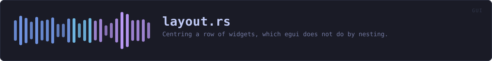

crates/veilvoice-gui/src/layout.rs
veilvoice-gui · 247 lines · read the source here · or on GitHub
Centring a row of widgets, which egui does not do by nesting.
The defect this exists to fix
The unlock screen drew its mark, its name and the word "locked" inside egui::Ui::vertical_centered, and then drew the password field, the unlock button and the status line underneath in a plain row. The heading sat in the middle of the window and the controls sat against the left edge. The same shape turns up wherever a row is drawn only after setup rather than at launch, because those rows tend to be written later and separately from the ones they end up beside.
The obvious repair does not work, and it is worth writing down why, because it looks like it should. Wrapping the row in vertical_centered puts it in a Layout::top_down(Align::Center), which centres each child narrower than the available width. Ui::horizontal is never narrower: it allocates
let initial_size = vec2(
self.available_size_before_wrap().x, // the whole width
self.spacing().interact_size.y,
);so the row's box is already full width, there is nothing left to centre it within, and its contents start at that box's left edge. A centred layout inside a centred layout changes nothing. Layout::left_to_right carries main_align: Align::Center and does not help for the same reason.
Measured last frame, drawn this frame
The row is drawn once, with a space in front of it worked out from how wide the same row turned out to be on the previous frame, remembered in egui's own temporary memory.
The closure is called once, and that is the whole design constraint. The tidier-looking approach is egui::UiBuilder::sizing_pass: lay the row out invisibly, measure it, then lay it out again for real. That needs the closure twice, and these closures are not pure. The unlock row spawns a key derivation when its button reports a click, and a sizing pass runs the body rather than skipping it, so measuring that way would risk spawning the work twice from one press. A row of widgets is not worth a double unlock, so the width comes from the last frame instead.
The cost is that the first frame a row appears on is drawn left-aligned, for as long as it takes to ask for another frame, which is done here immediately. Nobody sees a single frame at sixty of them a second; and if it were ever visible, being briefly left-aligned is what the defect looked like permanently.
WHAT THIS FILE CONTAINS
247 lines defining 1 function (1 public), 0 types and 0 constants. Everything below is read out of the source, so it cannot disagree with the code.
What happens when it runs. These are the ways in: public, and nothing else in this file calls them, so they are what an outside caller reaches first.
centred_rowline 60 · Draw a row of widgets centred in the width available.
WHAT CALLS WHAT
The functions this file defines, and the calls between them. An edge means the callee's name appears, called, inside the caller's body. This is a syntactic reading, not a type-resolved one.
The same graph as Mermaid source
%%{init: {"theme":"base","themeVariables":{"background":"#1a1b26","primaryColor":"#1f2335","primaryTextColor":"#c0caf5","primaryBorderColor":"#7aa2f7","secondaryColor":"#16161e","tertiaryColor":"#16161e","lineColor":"#737aa2","textColor":"#c0caf5","mainBkg":"#1f2335","nodeBorder":"#7aa2f7","clusterBkg":"#16161e","clusterBorder":"#2f3549","fontFamily":"ui-monospace, SFMono-Regular, Consolas, monospace","fontSize":"14px"}}}%%
flowchart TD
n_centred_row(["centred_row<br/>line 60"])
click n_centred_row href "https://github.com/tilas01/veilvoice/blob/main/crates/veilvoice-gui/src/layout.rs#L60" "open the source"
classDef entry fill:#1f2335,stroke:#7aa2f7,color:#c0caf5
class n_centred_row entryThis site loads no third-party script, so it cannot run Mermaid; the diagram above is the same nodes and edges drawn by the generator instead. GitHub renders the source below directly.
ITEMS
| Item | Line | Documentation |
|---|---|---|
centred_row pub fn | 60 | Draw a row of widgets centred in the width available. |